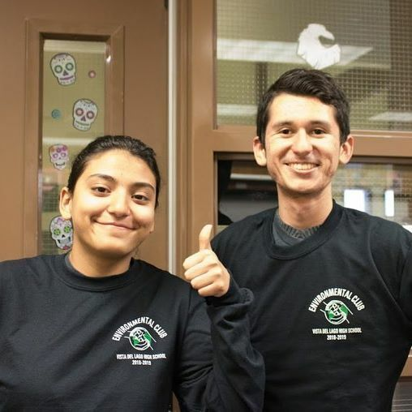
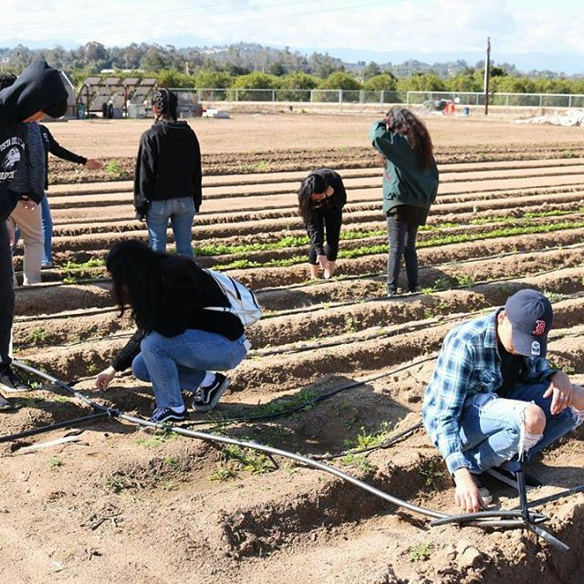
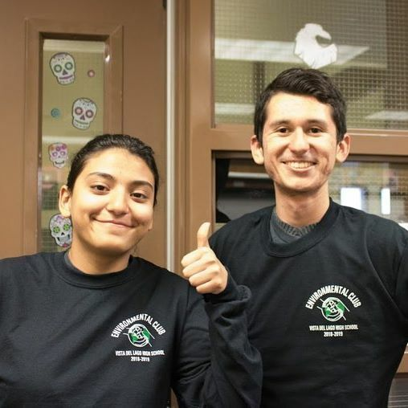
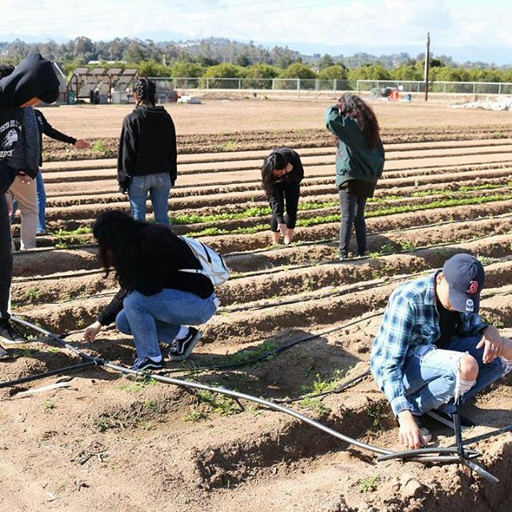

Karen Acevedo-Lopez
Bio:
Hello! My name is Karen Acevedo-Lopez, and I currently attend the University of California Riverside. Currently, I am working on my B.A. in English at UCR. I want to become an English teacher, and to teach English as a foreign language. I am currently working as a waiter in a retirement home, and I have grown to learn a lot about people. I love helping others who have trouble with their classes. I enjoy creating art and those who make an impact using art. I try to support as many artists as I can, either by buying their art or donating. Art made such a huge impact on my life, I want to see it make an impact among younger generations. I enjoy writing my own pieces for fun, on any topic I choose. My writing can range from humorous to issues I see within my community.
My inspiration for becoming an English teacher, was my AP Literature teacher. He had so much passion for teaching his students and made sure every work had some meaning for each student. He supported many of his students through hard times, encouraging them to do great things. I want to be that kind of teacher, to be the person who beileves in others, while no one else does. My goal for the future is, to become an AVID tutor to help high school kids who were not given opportunities to go to college succeed into accomplishing that. I want to see them be able to apply to several universites, and see them get accepted. I want to see them make a path to a better future. Becoming an AVID tutor, would allow me to develop some skills necessary to teach in a classroom setting.
Currently, I am a waitress at Westmont Living. Westmont Living is a retirement home, most of the residents being veterans. My job includes serving the residents their meals, preparing events set in the dining room, and other task that invlove food services. During events, I am the one who is mainly responsible for table decor, such as napkins. My supervisor assigns me the task in napkin decoration, folding the napkins into various designs. My job has helped me better communicate with others, learing to have paitence with people. Often I learned new things at work, like how to deal with a resident who has fell. I developed numerous skills that help me expand my opportunities in the future
The Environmental Club has shaped me during my high school years. I was introduced to new people, who I did not think would be my closest friends. It has taught me many thing, such as to make a change in the world. I learned to worjs with others as a team, which helped me a lot in my current job. I learned how to cultivate things with my own hands, how to be environmentally friendly, and made me choose UCR. Environmental Club's activites half of the time were at UCR, seeing UCR everytime made me fall in love with it everytime.
Experience
Club Member
•Cleaned trash from adopted roads
• Participated in school announcements
•Collected recycling from classroom bins
•Volunteer at UCR community garden
Waitress
• Responsible for taking menu orders
• serve food
• Answer questions about the menu
• assist with customer services
•etc
Club Member
• create candy grams to sell
•attend events held by the club/organization
•sell/pass out candy grams
Education
UC Riverside
Portfolio




 